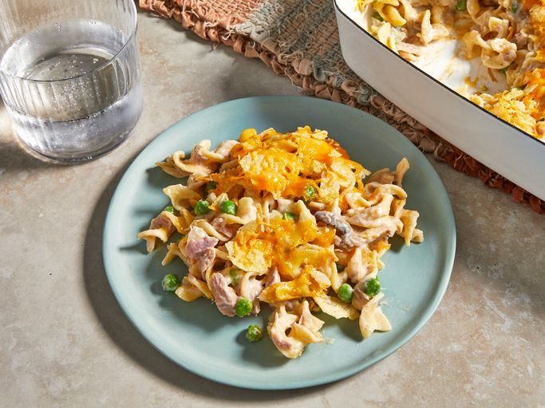

Tuna Casserole

Description
A casserole. But with tuna.
Ingredients:
- package egg noodles
- condensed cream of mushroom soup
- shredded Cheddar cheese
- canned tuna
- frozen green peas
- sliced mushrooms
- chopped onion
- potato chips
Steps:
- Fill a large pot with lightly salted water and bring to a rapid boil. Cook egg noodles at a boil until tender yet firm to the bite, 7 to 9 minutes; drain.
- Meanwhile, preheat the oven to 425 degrees F (220 degrees C).
- Mix noodles, condensed soup, 1 cup cheese, tuna, peas, mushrooms, and onion in a large bowl until well combined.
- Transfer the mixture into a 9x13-inch baking dish.
- Top the mixture with crushed potato chip and remaining 1 cup of cheese.
- Bake in the preheated oven until cheese is bubbly, about 15 to 20 minutes.